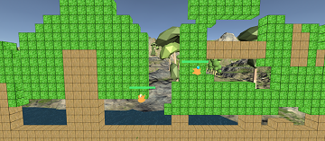
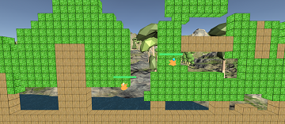
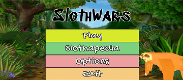
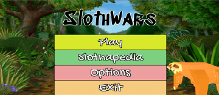
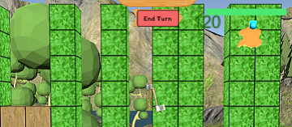
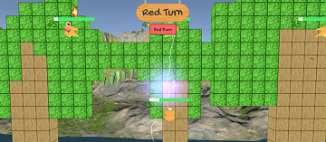
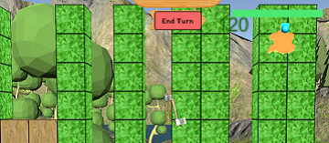
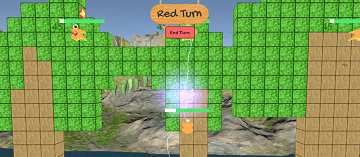

 
 
 
  
 
PROYECTO
Sloth Wars es un videojuego en el que los perezosos serán los personajes principales.
En el juego se definen dos equipos: equipo Azul y equipo Rojo. Ganará el equipo que consiga derrotar al otro equipo antes. Para ello, se definen varios tipos de perezosos con sus respectivas habilidades, las cuales permitirán atacar a los perezosos del equipo contrario o protegerse de ellos.
Además, en cada turno de cada perezoso se podrán llevar a cabo un número limitado de acciones, donde se gastará una acción posible por cada habilidad o movimiento realizado por el perezoso
La partida se llevará a cabo en un gran arbol del cual los perezosos ocuparán aleatoriamente un luegar del mismo al cargar la partida.
¡Esperemos que disfrute de Sloth Wars!
TIPOS DE SLOTHS


Sus habilidades se basan en lanzar flechas hacia otros sloths.
Entre sus características, destaca mucho su fueza pero en contra no posee demasiada defensa ni salud.
Sloth Wizard
Este sloth mago puede lanzar varios tipos de hechizos los cuales pueden hacer destruir el terreno.
Las características que posee son equilbradas.
Sloth Healer
Las habilidades de este sloth consisten en hacer curar a otros sloths compañeros.
De sus características, destaca su defensa.
Sloth Tank
Este sloth puede, o bien defenderse de ataques con su escudo, o atacar con su hacha.
Sobresalen su salud y su defensa.
Sloth Utility
Las habilidades de este sloth permiten cambiar el terreno del juego, construyendo elementos con un fin defesivo.